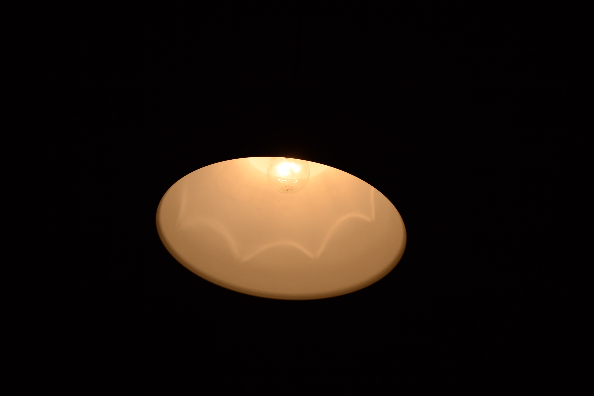

Bienvenidos a mi pagina web, mi nombre es jose femenias y mi intencion con esta pagina web es enseñar a aquel que tenga una camara lo que puede llegar a hacer con ella
El mundo de la fotografia es muy amplio y en esta pagina nos enfocaremos al uso de una camara DSLR
Y lo más importante en la fotografia no es tener el equipo mas caro,la mejor cámara,o el mejor tripode.Obviamente esto influye pero basandome en los estandáres de las camaras dslr rara es aquella que no tiene un sensor decente y una buena cantidad de megapixeles (12-14mpx es una cifra más que suficiente)Ahora eso si,tenemos que tener cierto equipo básico que nos sera de gran utilidad en toodo el proceso de aprendizaje teneis un enlace a continuación con una lista de objetos en amazon:
| tripode-pinchar aquí / tarjeta sd-pinchar aquí |
Empezaremos por los elementos basicos de una cámara que los veremos de una manera muy concisa.
· CUERPO DE NUESTRA CAMARA
· LENTES U OBJETIVOS
· SENSOR
· DIAFRAGMA
· OBTURADOR
· BOTONES DE AJUSTE DE PARAMETROS
· PANTALLA
· VISOR
En nuestra cámara si seeleccionamos el modo manual de la cámara podremos ver que tenemos tres variables que podremos ajusutar a nuestro deseo. Estas variables son:
O explicado de una forma más simple el tiempo que tarda en hacer una foto,y explicado de una forma más tecnica,el tiempo que el sensor esta recibiendo luz. este parámetro va desde treinta segundos con el oturador abierto a un cuatromilesimo de segundo (1/4000).
¿Qué nos indica la aperrtura?La apertura visto de esta forma seria cuanto de aierta tenemos la pupila del ojo a mayor apertura más cerrada la pupila a menor apertura más dilatada la pupila.En definitiva limita la cantidad de luz que entra en el sensor.
El ISO no es un componente físico como tal,el iso es la sensibilidad del sensor a la luz,a mayor sea el número más sensible sera el sensor. a elevados isos la imagen tiende a llenarse de ruido(el ruido es la variacion de brillo de forma aleatoria en multitud de puntos)
Dependiendo de como los ajustemos podemos llegar a obtener la misma foto pero con valores distintos,siempre que esten bien ajustados. Aquí va un ejemplo de dos fotos iguales pero,con valores diferentes:
|  | |
|||||
| ISO | APERTURA | VELOCIDAD DE OBTURACION | ISO | APERTURA | VELOCIDAD DE OBTURACION | |
Para hacerr una foto con nuestra camra de larga exposicion tendrempops que ajustar los distintos valoores que acintinuacioaon explico empezando por la velocidad de disparo la pondremos a una cantidad de 3-5 segundos como primera toma de contacto,y dependiendo de la cantidad de luz ecogeremos un mayor o meno ISO y a su vez mayoro menor apertura) para delimmitar la cantidad de luz entrante al sensor.

De acuerdo ahora os explicare mi proceso a llevar para hacer esta fotografia